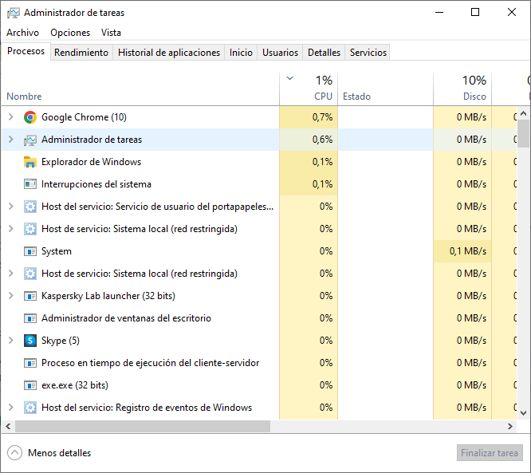
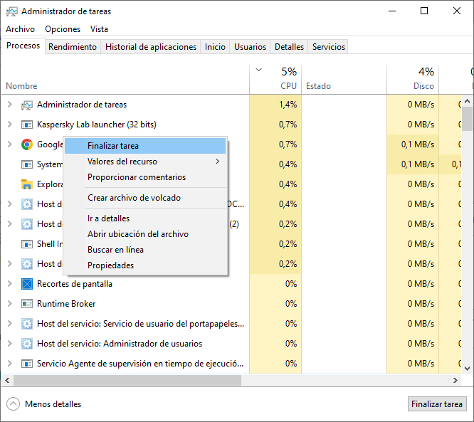

Windows tiene un sistema de control que se encarga de detectar automáticamente muchos problemas y de solucionarlos sin tener que hacer nada. Además, también tiene sus propias herramientas incluidas que nos pueden ayudar a solucionar automáticamente errores muy comunes y concretos. Una de ellas es el llamado Solucionador de problemas.
Solucionador de problemas
Para ejecutar el solucionador de problemas: Inicio > Configuración > Actualización y seguridad > Solucionar problemas.
A veces, el sistema operativo no es capaz de resolver un determinado problema en nuestro PC. En esos casos podemos recurrir a otros programas especializados en detectar y corregir problemas en Windows. Uno de estos programas es Driver Booster, un software gratuito que, entre otras cosas, comprueba todos los drivers que tenemos instalados en nuestro sistema y los actualiza en caso necesario.
Otro programa interesante, y gratuito también, es FixWin10, muy completo a la hora de detectar y corregir todo tipo de problemas.
Posibles problemas en nuestro equipo
- Si el ordenador tarda mucho en arrancar o tiene problemas para iniciar sesión. Es posible que haya algún proceso que esté interfiriendo. Intentaremos solucionarlo abriendo el Administrador de tareas y haciendo clic en la pestaña Inicio. Se mostrarán en una lista todos los programas que se inician cuando lo hace Windows. Aquellos que tengan un impacto Alto o Medio y que no sea necesario que arranquen al Inicio, deshabilítalos.
- Si el ordenador va lento, puede ser que tu disco duro se está quedando sin espacio libre. Elimina archivos innecesarios. También puede ocurrir que algún proceso se haya quedado "atascado", no responde, y esté ralentizando el sistema. En ese caso, podemos pulsar Ctrl + Alt + Supr y abrir el Administrador de Tareas. Aquí revisaremos si hay algún proceso, que hayamos arrancado nosotros, que pueda estar interfiriendo en el rendimiento del equipo. Pulsando con el botón derecho sobre dicho proceso podremos finalizarlo.


- Fallos de la RAM: si el ordenador emite un par de pitidos al iniciarse puede ser porque la BIOS está detectando un problema en el hardware. Otra señal de que algo va mal es, que cuando vas a la pestaña de "Acerca de" en la información del sistema, dentro de la configuración de Windows, no se indique toda la memoria RAM que tiene tu ordenador. Imagina que tienes 16 GB pero solo aparecen 8 GB, eso puede ser porque tengas dos módulos de 8 GB y uno esté fallando. Windows posee una herramienta para diagnosticar el estado de la memoria RAM. Para lanzarla, pulsa Windows + R, escribe "mdsched.exe" en la ventana de ejecución y pulsa Enter. También puedes escribir en el cuadro de búsqueda "mdsched" para ejecutar desde ahí la herramienta. Se abrirá el diálogo de la herramienta de diagnóstico de Windows.
En él, podrás reiniciar para comprobar si hay problemas, que es la opción recomendada. Al hacerlo, se reiniciará el ordenador y se abrirá una herramienta que te dice que pulses F1, y elijas si quieres hacer una prueba básica, estándar o extendida. Luego, Windows se reiniciará automáticamente y te enviará una notificación en la que se te va a especificar si hay errores.
- El archivo que se ejecuta cuando abrimos el explorador de archivos se llama explorer.exe. Se trata de uno de los procesos básicos de Windows, ya que casi todo el sistema depende de él. Si tenemos un ordenador muy cargado, es bastante habitual que explorer.exe se cuelgue. Cuando pasa esto suele ocurrir alguno de los problemas siguientes:
- Se ponen las ventanas del explorador en blanco con el mensaje ‘No responde‘.
- Desaparece la barra de tareas de la parte inferior de la pantalla.
- No es posible desplazarse entre los archivos.
- No se puede cambiar de programa, a no ser que se use Alt + Tab.
Podemos arreglarlo sin necesidad de reiniciar el ordenador, pulsando las teclas Crtl + Mayúsc + Esc, se abre el Administrador de tareas donde, como ya vimos antes, nos aparecen los procesos que están ejecución. Hay que localizar el proceso explorer.exe y terminarlo. Y, después, volver abrirlo.
- Si tu equipo hace cosas extrañas, por ejemplo, si se abren ventanas solas, si los iconos del escritorio se han movido de sitio, lo más probable es que tu equipo haya sido infectado por malware. Es recomendable que lo arranques en el Modo Seguro de Windows 10 con funciones de red: Inicio > Configuración > Actualización y Seguridad > Inicio Avanzado y luego pulsar en Reiniciar ahora. Cuando reinicie el equipo seleccionar Solucionar problemas > Opciones avanzadas > Configuración de inicio > Reiniciar. Cuando vuelva a reiniciar, selecciona 5 o presiona F5 para iniciar el modo seguro con funciones de red. Después, efectúa un análisis completo con tu software antivirus y elimina el malware.